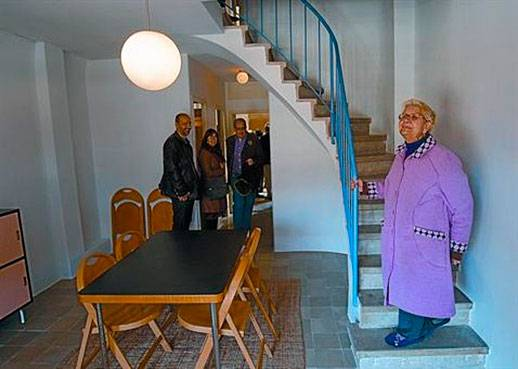

|
En el període
d'entreguerres mundials, l'arquitectura es va refundar. A tot
arreu va sorgir una nova manera de pensar-la i de fer-la. La
figura que representa aquest canvi és l'arquitecte suís Le Corbusier.
A Catalunya, aquest corrent renovador, racionalista, va trobar
el seu microclima ideal amb la República. I d'entre tots els
arquitectes catalans que s'integrarien al GATCPAC, una espècie
de selecte club de tècnics de la nova forma de pensar, el que
més fama va adquirir va ser Josep Lluís Sert.
Una de les seves obres bandera és la Casa Bloc, el conjunt de
vivendes per a obrers a Sant Andreu. Iniciat el 1932, es va
culminar després de la guerra civil. Xavier Trias va inaugurar
ahir la recuperació, després de dos anys de treballs, d'una
de les vivendes, la 1/11, tal com Sert i els seus companys Josep
Torres Clavé i Joan Baptista Subirana van pensar.
El Govern de Macià
La preocupació, si es vol paternalista, sobre com es pot millorar
les vivendes dels obrers va unir el GATCPAC amb el govern de
Francesc Macià, el pare de la caseta i l'hortet. Ja se sap que
els arquitectes són especialistes a projectar cases ideals en
què mai de la vida ells mateixos viurien.
La Casa Bloc compta amb més de 200 pisos d'uns 70 metres quadrats
de supefície, en dúplex. Són senzills. Planta baixa amb menjador,
cuina i bany, escala, planta superior amb dues habitacions.
A la planta inferior hi ha una mena de balcó en galeria. L'únic
que es manté és el de la casa museu; a la resta, els llogaters
han clausurat el forat original que dóna al carrer amb els coneguts
tancaments metàl·lics per guanyar aquells preciosos metres quadrats
que, potser, serviran per encabir-hi el televisor, cosa amb
la qual Sert i companyia no van comptar, òbviament.
| |
El mobiliari
utilitzat és de l'època. Aquí una taula de Marcel Breuer (amb
acabat de linòleum, ideal per netejar), allà unes cadires model
Thonet. La pila de la cuina, de marbre, al costat de la cuina
econòmica. Sense calefacció, que per a això es van inventar,
i es feien servir als anys 30, les estufes. El treball d'investigació
seguit ha estat realment ingent. Per exemple, per trobar el
color original de la façana interior, aquell color celeste que,
combinat amb el taronja dels elements metàl·lics, fa una impressió
com a mínim estranya.
També per col·locar aquell paviment hidràulic de pobre, és a
dir, gris llis, res a veure amb els florejats que es trepitjaven
en aquella època als millors pisos de l'Eixample. Els treballs
han costat un total de 35.000 euros.

Ricard Cugat - El Periódico
|